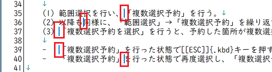
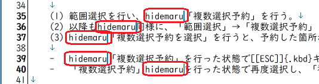

秀丸エディタ Ver.8.40以降では、「複数選択」が可能です。
エディタ画面上で複数個所を選択し、同時に編集および 各種変換 削除 コピー ができます。
複数選択する方法は、いくつかあります。
マウスを使う
マウスの場合は、複数選択箇所の修正ができないので、間違った場合は一度すべての選択を解除する必要があります。
キーボードを使う
マウスに比べると、手順が複雑になりますが選択の修正は容易です。事前に、「複数選択予約」「複数選択予約を選択」「複数選択予約を消去」「複数選択予約を全て消去」の各コマンドを、キー割り当てておくと便利です。
検索を使う
「第II部〜知っていると便利な秀丸の機能 検索」に説明がありますが、「すべて検索」の所に「すべて検索 - 複数選択」があります。
これを使用すれば、検索条件にマッチする箇所をすべて「複数選択」できます。この状態から、マウスを使って複数選択を追加できます。
実際に複数選択した状態です。(3箇所を選択している)

複数選択した状態でキー入力すると、選択した箇所全てに同じ内容を入力できます。 (通常の範囲選択と同じで、選択した箇所を上書きします)

複数選択した状態でコピーすると、複数選択した項目を改行で連結した文字列としてコピーされます。

貼り付け結果。

複数選択後、カーソルキーの[←] or [→] で、カーソル位置を各範囲選択の先頭か末尾に一度だけ移動できます。選択状態は解除されますが、複数選択中なのでそのまま入力すると、先頭または末尾に追加されていきます。複数選択が解除されているかどうかは、カーソルが複数あるかどうかで判断できます。
末尾にカーソルを移動し、追加した例。

わかりやすいように範囲選択しましたが、必須ではありません。以下は、範囲選択していません。マウスを使い、[Ctrl]+[Alt]キーを押しながら、各部をクリックしています。 (幅がない範囲選択という扱い)

この状態で入力すると、各カーソル位置に入力されます。

マウスで複数選択を使う場合、「動作環境−編集−複数選択」で、ドラッグ時のキー割り当てを変更できます。

キーボードで複数選択する場合、「複数選択予約」「複数選択予約を選択」「複数選択予約を消去」「複数選択予約を全て消去」を何かのキーに割り当てておくと便利です。
複数選択状態で、マクロを実行する場合は注意が必要です。
デフォルト状態では、各種命令は「複数選択」に対応していません。たとえば、複数選択状態で "copy"、"delete" を実行しても、複数選択した箇所ではなくカーソルのある箇所だけ実行されます。
各種命令を「複数選択」に対応させるには、「setcompatiblemode文」を使います。
setcompatiblemode 文のフラグには、以下のフラグがあるので、このフラグをセットします。
0x00100000 各種の文を複数選択対応した動作にします。